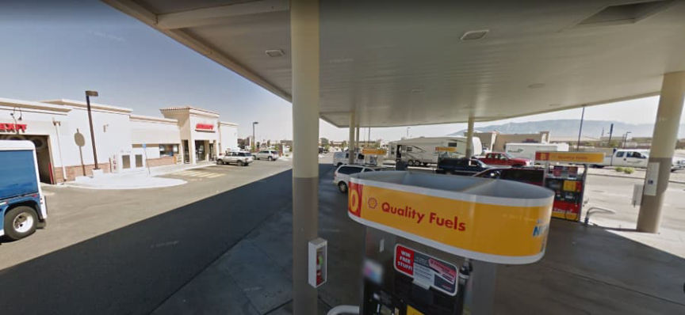
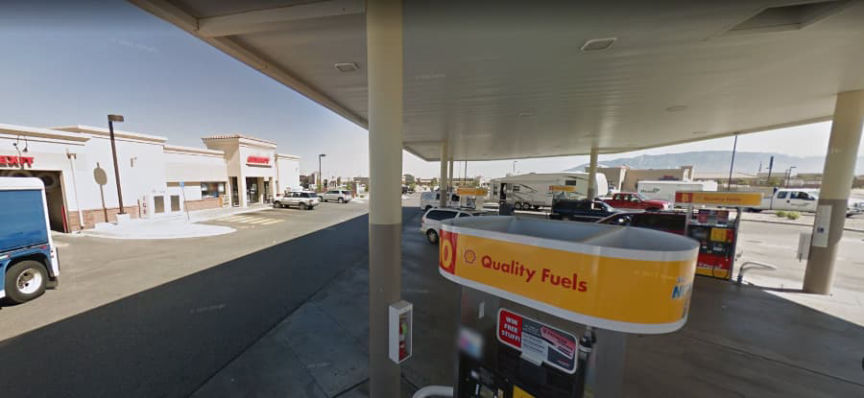

Empire Vendor TheQueensHive Pleads Guilty to Drug Charges
~4 min read | Published on 2021-09-11, tagged Darkweb-Vendor, Drugs, General-News, Pleaded-Guilty using 858 words.
A man from New Mexico admitted selling methamphetamine, LSD, and MDMA through a vendor account on the darkweb.
In federal court in Brooklyn, defendant Gilberto Melgarejo pleaded guilty to conspiracy to distribute and possession with intent to distribute. Melgarejo and his co-conspirator Brooke Gray operated a vendor account on Wall Street Market and Empire Market under the username “TheQueensHive.” Gray pleaded guilty to the same charges on August 10, 2021.
The investigation followed the pattern seen in the vast majority of darkweb investigations. In a criminal complaint, U.S. Drug Enforcement Administration (DEA) Special Agent Allan Liefke wrote that investigators had identified the TheQueensHive account on Wall Street Market as a target in either 2018 or early 2019. Recurring investigative methods included undercover purchases, viewing surveillance footage, blockchain analysis, subpoenas to financial service companies, and open-source intelligence gathering.
[img=]TheQueensHive had profiles on Empire and Wall Street Market | Recon[/img]
In 2019, undercover DEA employees in New York conducted several undercover purchases from TheQueensHive account on Wall Street Market. The purchases and deliveries occurred as expected. However, investigators quickly had the defendant on camera. After receiving the package, investigators reviewed information from the United States Postal Service (USPS) to find out where the package had entered the mail stream: a Speedway gas station located at 6570 Paradise Blvd NW in New Mexico. Investigators reviewed footage obtained from the Speedway and identified a hispanic male who arrived at the gas station in a silver Honda Civic and a package wrapped in gold foil. After entering the Speedway, the suspect, later identified as Melgarejo, placed the package inside a USPS envelope. Special Agent Liefke noted that the gold foil packaging matched the packaging received by the DEA after ordering methamphetamine from TheQueensHive.

The DEA conducted numerous undercover purchases from the vendor on Wall Street Market (WSM) and then switched to Empire Market after law enforcement had seized the WSM servers. In later surveillance footage, investigators spotted a second defendant, later identified as Gray, accompanying Melgarejo at the Speedway.
After establishing a relationship with the vendor, investigators started conducting controlled purchases through an unidentified “text message application.” Given that vendors have historically provided their Wickr account information to customers in an attempt to avoid marketplace fees, the application referenced is likely Wickr.
TheQueensHive, through the application, provided investigators with a Bitcoin address for payment. Investigators immediately identified the Bitcoin address as one linked to a Bitcoin exchange company. The company remains unidentified in the criminal complaint but various pieces of information in the document point to Coinbase as the company in question.
Vendors constantly use Coinbase. The exchange allowed users to convert Bitcoin to USD in minutes. The exchange allowed users to cash out to a PayPal account. Timestamps in the complaint show that within the space of five minutes, the defendant had received Bitcoin, converted it to USD, cashed out to PayPal, and sent it to their bank account. Before Coinbase supported instant withdrawals to certain bank accounts, Coinbase allowed instant withdrawals to PayPal.
[img=]Coinbase now allows instant withdrawals in certain cases.[/img]
In July 2019, after conducting an undercover purchase from the vendor, the DEA established surveillance at the Speedway and obtained the Honda Civic license plate number. The accessed the vehicle registration database provided by the New Mexico Department of Motor Vehicles (DMV). A search of the database revealed that Melgarejo owned the car. Investigators then searched the DMV driver database for Melgarejo and matched the man caught on the surveillance footage with Melgarejo’s ID picture.
During the investigation, the vendor provided the undercover DEA employee with a phone number they could use to conduct business. The phone number was associated with the unidentified “Application 2,” investigators learned. That application was associated with a Google Email (Gmail) account. Records from Google revealed that the I.P. address used to access the Gmail account belonged to the internet service provider (ISP) CenturyLink. Records from CenturyLink identified the account holder associated with the I.P. address lived at a house owned by Gray’s father.
[img=]Between February and September 2019, Gray received more than $18,000.[/img]
A search of public records revealed that Gray used a phone number associated with an AT&T account. Records from AT&T revealed that Gray’s mother, who lived at the same address as her father, owned the AT&T account. The DEA knew the phone numbers Gray had contacted between August and September 2019. Although the complaint does not indicate the method used to obtain this information, one can only assume they obtained authorization to install a pen register or trap and trace device. Gray’s number had sent more than 300 SMS messages to a specific number during the timeframe specified above. Records from the cryptocurrency exchange indicated that the number in question belonged to Melgarejo’s exchange account. The same records revealed that the same phone number had accessed an exchange account under Gray’s name. The DEA also obtained information from CenturyLink that associated the Gray I.P. address with Melgarejo’s cryptocurrency exchange account.
They were both arrested on November 14, 2019, in Albuquerque, New Mexico.
Although the actual sentence will likely be much shorter, the charges allow for a maximum prison sentence of life.
Complaint (pdf)
In federal court in Brooklyn, defendant Gilberto Melgarejo pleaded guilty to conspiracy to distribute and possession with intent to distribute. Melgarejo and his co-conspirator Brooke Gray operated a vendor account on Wall Street Market and Empire Market under the username “TheQueensHive.” Gray pleaded guilty to the same charges on August 10, 2021.
The investigation followed the pattern seen in the vast majority of darkweb investigations. In a criminal complaint, U.S. Drug Enforcement Administration (DEA) Special Agent Allan Liefke wrote that investigators had identified the TheQueensHive account on Wall Street Market as a target in either 2018 or early 2019. Recurring investigative methods included undercover purchases, viewing surveillance footage, blockchain analysis, subpoenas to financial service companies, and open-source intelligence gathering.
[img=]TheQueensHive had profiles on Empire and Wall Street Market | Recon[/img]
In 2019, undercover DEA employees in New York conducted several undercover purchases from TheQueensHive account on Wall Street Market. The purchases and deliveries occurred as expected. However, investigators quickly had the defendant on camera. After receiving the package, investigators reviewed information from the United States Postal Service (USPS) to find out where the package had entered the mail stream: a Speedway gas station located at 6570 Paradise Blvd NW in New Mexico. Investigators reviewed footage obtained from the Speedway and identified a hispanic male who arrived at the gas station in a silver Honda Civic and a package wrapped in gold foil. After entering the Speedway, the suspect, later identified as Melgarejo, placed the package inside a USPS envelope. Special Agent Liefke noted that the gold foil packaging matched the packaging received by the DEA after ordering methamphetamine from TheQueensHive.

Apparently one can mail USPS packages at gas stations in New Mexico | Google Maps
The DEA conducted numerous undercover purchases from the vendor on Wall Street Market (WSM) and then switched to Empire Market after law enforcement had seized the WSM servers. In later surveillance footage, investigators spotted a second defendant, later identified as Gray, accompanying Melgarejo at the Speedway.
After establishing a relationship with the vendor, investigators started conducting controlled purchases through an unidentified “text message application.” Given that vendors have historically provided their Wickr account information to customers in an attempt to avoid marketplace fees, the application referenced is likely Wickr.
TheQueensHive, through the application, provided investigators with a Bitcoin address for payment. Investigators immediately identified the Bitcoin address as one linked to a Bitcoin exchange company. The company remains unidentified in the criminal complaint but various pieces of information in the document point to Coinbase as the company in question.
Vendors constantly use Coinbase. The exchange allowed users to convert Bitcoin to USD in minutes. The exchange allowed users to cash out to a PayPal account. Timestamps in the complaint show that within the space of five minutes, the defendant had received Bitcoin, converted it to USD, cashed out to PayPal, and sent it to their bank account. Before Coinbase supported instant withdrawals to certain bank accounts, Coinbase allowed instant withdrawals to PayPal.
[img=]Coinbase now allows instant withdrawals in certain cases.[/img]
In July 2019, after conducting an undercover purchase from the vendor, the DEA established surveillance at the Speedway and obtained the Honda Civic license plate number. The accessed the vehicle registration database provided by the New Mexico Department of Motor Vehicles (DMV). A search of the database revealed that Melgarejo owned the car. Investigators then searched the DMV driver database for Melgarejo and matched the man caught on the surveillance footage with Melgarejo’s ID picture.
During the investigation, the vendor provided the undercover DEA employee with a phone number they could use to conduct business. The phone number was associated with the unidentified “Application 2,” investigators learned. That application was associated with a Google Email (Gmail) account. Records from Google revealed that the I.P. address used to access the Gmail account belonged to the internet service provider (ISP) CenturyLink. Records from CenturyLink identified the account holder associated with the I.P. address lived at a house owned by Gray’s father.
[img=]Between February and September 2019, Gray received more than $18,000.[/img]
A search of public records revealed that Gray used a phone number associated with an AT&T account. Records from AT&T revealed that Gray’s mother, who lived at the same address as her father, owned the AT&T account. The DEA knew the phone numbers Gray had contacted between August and September 2019. Although the complaint does not indicate the method used to obtain this information, one can only assume they obtained authorization to install a pen register or trap and trace device. Gray’s number had sent more than 300 SMS messages to a specific number during the timeframe specified above. Records from the cryptocurrency exchange indicated that the number in question belonged to Melgarejo’s exchange account. The same records revealed that the same phone number had accessed an exchange account under Gray’s name. The DEA also obtained information from CenturyLink that associated the Gray I.P. address with Melgarejo’s cryptocurrency exchange account.
They were both arrested on November 14, 2019, in Albuquerque, New Mexico.
Although the actual sentence will likely be much shorter, the charges allow for a maximum prison sentence of life.
Complaint (pdf)